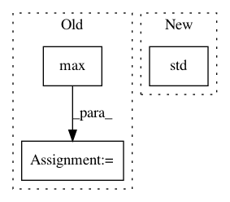

fa0c013fc201cebf5c9aceb0098cf7cc9094a34f,batchflow/utils.py,,print_results,#Any#Any#Any#Any#Any#Any#,209
Before Change
cdf = cdf.drop(["config", "name"], axis=1).dropna(axis=1).astype("float")
if average_repetitions:
idf = cdf.groupby("iteration").mean().drop("repetition", axis=1)
max_iter = idf.index.max()
idf = idf[idf.index > max_iter - n_last]
data.append([idf[attr].mean(), idf[attr].std()])
else:
rep = []
After Change
rdf = rdf[rdf["iteration"] > rdf["iteration"].max() - n_last]
rep.append(rdf[attr].mean())
if average_repetitions:
data.append([np.mean(rep), np.std(rep)])
else:
data.append([*rep, np.mean(rep), np.std(rep)])
In pattern: SUPERPATTERN
Frequency: 3
Non-data size: 3
Instances
Project Name: analysiscenter/batchflow
Commit Name: fa0c013fc201cebf5c9aceb0098cf7cc9094a34f
Time: 2020-04-02
Author: dimonovez@gmail.com
File Name: batchflow/utils.py
Class Name:
Method Name: print_results
Project Name: reinforceio/tensorforce
Commit Name: cf6d258c003a5a5b5073830e73e4580aeaf71d45
Time: 2017-06-24
Author: aok25@cl.cam.ac.uk
File Name: tensorforce/core/preprocessing/normalize.py
Class Name: Normalize
Method Name: process
Project Name: nilearn/nilearn
Commit Name: 8ccd6c1ff65b95e02a6aa06bef618586f3c246a8
Time: 2012-10-10
Author: alexandre.abraham@cea.fr
File Name: plot_canica_resting_state.py
Class Name:
Method Name: